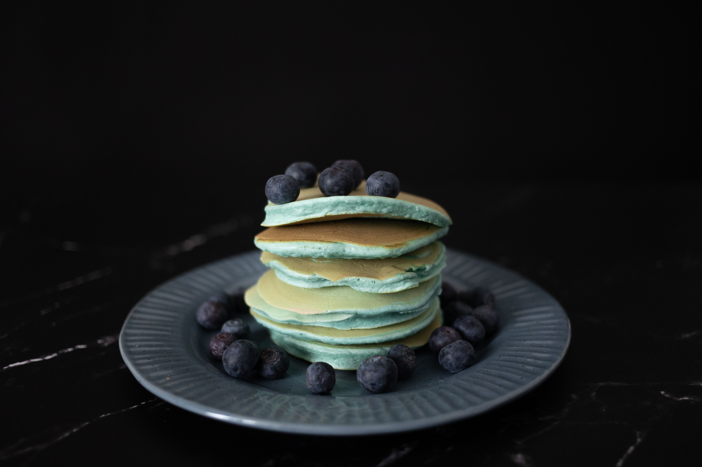

Home
Vegan Pancakes

Easy and fluffy
These vegan pancakes, made with simple pantry ingredients, cook up light
and fluffy. No fancy ingredients needed — and easy swaps
like milk alternatives or fruit turn out well. They were even better when
we added some blueberries.
Ingredients for 3 servinges (est. 27 pancakes) of this meal:
- 1 ¼ cups all-purpose flour,
- 2 tablespoons white sugar,
- 2 teaspoons baking powder,
- ½ teaspoon salt,
- 1 ¼ cups water,
- 1 tablespoon oil.
Steps:
-
Sift flour, sugar, baking powder, and salt into a large bowl; make a
well in the center. Whisk together water and oil in a small bowl.
- Pour oil and water into flour mixture.
- Stir just until blended; mixture will be lumpy.
- Heat a lightly oiled griddle over medium-high heat.
-
Drop batter by large spoonfuls onto the griddle. Cook until bubbles
form and edges are dry. Flip, then cook until bottoms are browned, 1
to 2 minutes. Repeat with remaining batter.
- Serve with berries.